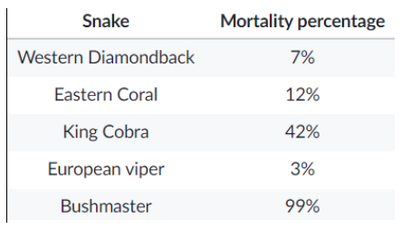

Question 1
A scientist wanted to determine the toxicity of venom in five species of snake. He collected data on the mortality (or death rate) from each snake species' bites.
Question 2
The more similar the DNA of two species, the more closely related they are. Scientists have used modern DNA analysis to trace the evolutionary relationships among Darwin’s 13 species of finches. DNA analysis revealed that the finch species all had very similar DNA. Thus, Darwin was correct when he proposed that they had evolved from a common ancestor
Question 3
Many individuals concerned with their carbon footprint are excited about the availability of hybrid electric vehicles. These cars are much more efficient in their use of fossil fuels than similarly sized internal combustion automobiles. However, hybrid electric vehicles do come with an environmental price tag. Their construction uses scarce metals, such as neodymium, lithium and lanthanum. Additionally, mining these elements involves pumping acids into deep boreholes to dissolve the surrounding rock and then removing the acid and mineral slurry. Such extraction processes are a type of surface mining, which have severe environmental impacts such as erosion, acid mine drainage, water pollution, and disruption of habitat.
Question 4
In 1911, a British scientist called Ernest Rutherford directed a series of experiments that greatly increased our understanding of atomic structure. During the experiment, his students fired positively charged alpha particles (helium nuclei, each of which contains two protons and two neutrons) at an extremely thin sheet of gold. (Gold is a very malleable metal that can be beaten into a foil that’s only a few atoms thick.) Rutherford expected all the alpha particles to go through the gold foil with minimal deflection, but to his surprise, a few alpha particles bounced straight back. Rutherford concluded that atoms consisted mostly of empty space with a dense nucleus at the center and electrons orbiting the nucleus.
Question 5
The Earth’s magnetic field is caused by the rotation of the liquid magma around the Earth’s iron core. Over the years, changes in this rotation have caused the Earth’s magnetic North Pole to shift position from its earliest recorded position in northern Canada to its current position today.
1. Which of the following lists the snakes from most deadly to least deadly?
2. Which of the following best explains why DNA analysis provides better evidence to support the hypothesis that Darwin’s finches evolved from a common ancestor than the scientific methods that Darwin used?
3. Which sentence from the passage above best supports the idea that driving a hybrid electric vehicle burns gasoline?
4. Which of the following statements provides evidence that an atom has a nucleus that contains most of the atom’s mass and all of its positive charge?
5. What can you infer from this information?